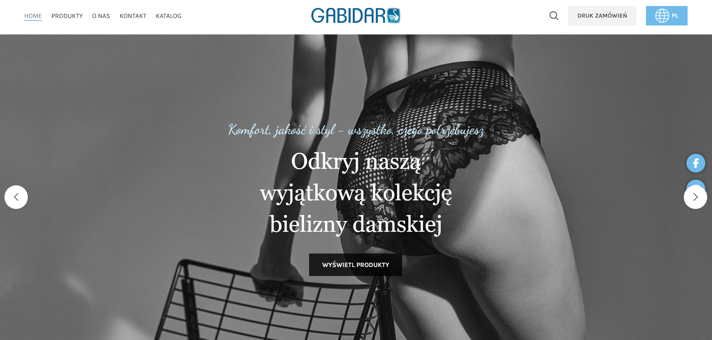
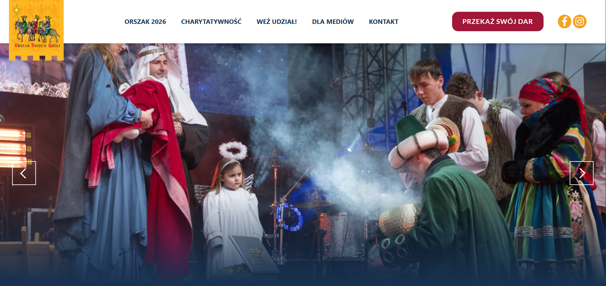
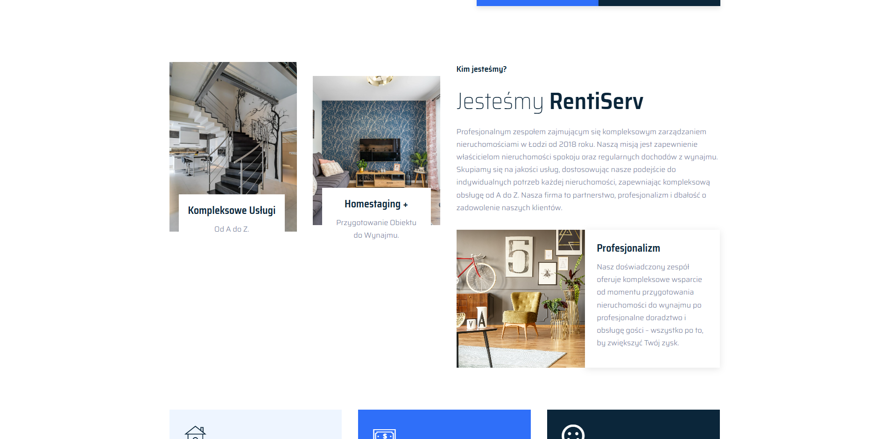

Jan Stołowski
Student Wydziału Międzynarodowego (IFE) na Politechnice Łódzkiej oraz General Engineering na ICAM Strasbourg. Interesuje mnie optymalizacja procesów na styku biznesu i IT - poniżej projekty, które aktualnie rozwijam.
Strony
03 / 03

Projekty
06 / 06 — 1 w trakcieCMS
System do instant deploymentu stron klienckich
CMS, nad którym aktualnie pracuję — oddzielony config (YAML) od szablonu (Jinja2), wizualny builder do składania sekcji bez dotykania kodu, i export do czystego HTML/CSS/JS gotowego do wdrożenia od ręki.
- Wizualny builder: brand, sekcje (drag & drop), SEO, analytics, custom code — wszystko z live preview
- 12+ partiali sekcji (hero w 5 wariantach, pricing, FAQ, testimonials, formularz kontaktowy z honeypotem)
- WCAG 2.1 AA na wygenerowanych stronach: skip linki, aria-live, focus-visible, reduced-motion
- SEO wbudowane: Open Graph, JSON-LD, canonical URL, live podgląd snippetu Google
- Integracje GTM / GA4 / OneTrust
Python / FastAPI
Jinja2
YAML config
js-yaml
zero JS libs (output)
miejsce na gif/wideo z buildera
(builder UI w akcji)
(builder UI w akcji)
IsoBee — PLX-DAQ Visualization
Desktop GUI do akwizycji danych z systemu pomiarowego Arduino
Aplikacja desktopowa zastępująca makro Excel/PLX-DAQ używane do zbierania danych z ula testowego: live odczyt z Arduino po USB, wizualizacja w czasie rzeczywistym, eksport do CSV. Dwa tryby akwizycji obsługiwane przez jeden, wspólny pipeline danych.
- Dwa tryby pomiarowe: protokół PLX-DAQ (termopary, DS18B20, DHT11, PID) i wolny serial dla testu grzania (6 czujników analogowych)
- Do 4 wykresów live (OpenGL, pyqtgraph) z automatycznym routingiem kolumn po słowach kluczowych z linii LABEL
- Wątek serialowy (QThread) oddzielony od UI — odczyt PLX-DAQ albo parsowanie regexem w trybie free-form, ten sam sygnał danych do tabeli/wykresów/CSV
- Karty metryk (średnia temperatura, wilgotność, czas nagrywania) z live odczytem "now:"
- Panel logu debug do diagnozowania komunikacji serial + eksport CSV z timestampem
Python / PySide6
pyqtgraph
pyserial
Arduino / C++
PID control
miejsce na gif/wideo z aplikacji
(live wykresy + akwizycja)
(live wykresy + akwizycja)
Generator etykiet kodów kreskowych
Pipeline EPS → szablon do druku na naklejkach produktowych
Skrypty przetwarzające pliki EPS kodów kreskowych na gotowe do druku arkusze A4 — grid naklejek z opisem produktu, generowany masowo na podstawie listy z CSV. Automatyzuje konwersję i rozmieszczenie, które wcześniej robione było ręcznie.
- Konwersja EPS → PNG przez Ghostscript (Pillow), w skali i DPI dobranych pod druk etykiet
- Automatyczne układanie kodu na arkuszu A4 w gridzie 5×14 z precyzyjnym marginesem i odstępami w punktach
- Opis produktu (2 linie, obrócony 90°) generowany per arkusz na podstawie danych z CSV
- Odporne wczytywanie CSV — próba kilku kodowań (utf-8, cp1250, latin1)
- Wsadowe generowanie PDF-ów do osobnych podfolderów na podstawie kolumn z CSV
Python
Pillow
ReportLab
Ghostscript
CSV batch processing
miejsce na gif/wideo
(arkusz wygenerowanych etykiet)
(arkusz wygenerowanych etykiet)
Optymalizacja sieci logistycznych — algorytm Physarum
W trakcie pracy nad optymalizacją sieci logistycznych · planowana praca inżynierska
Model sieci logistycznej (magazyny, centra dystrybucji, klienci) jako ważony graf, optymalizowany algorytmem inspirowanym śluzowcem Physarum polycephalum: iteracyjne rozwiązywanie układu ciśnień Kirchhoffa i wzmacnianie krawędzi proporcjonalnie do przepływu, aż sieć zbiegnie do stabilnej topologii.
- Pętla iteracyjna: rozwiązanie układu Kirchhoffa (scipy.sparse) → aktualizacja przewodności D ← D·|Q|/(γ+|Q|) → konwergencja
- Trzy scenariusze testowe: praca normalna, zakłócenie strukturalne (usunięcie węzła/krawędzi), zmiana popytu
- Samoistna redystrybucja przepływu po zakłóceniu, bez przeliczania od zera jak w klasycznych solverach
- Metryki: koszt sieci, efektywność ścieżki, prędkość odzyskiwania po zakłóceniu, zachowanie przepływu, stabilność konwergencji
- Baseline porównawczy: Dijkstra, Prim, programowanie liniowe dla przepływu o minimalnym koszcie
Python
networkx
numpy / scipy
matplotlib
bio-inspired optimization
miejsce na gif/wideo
(symulacja sieci w trakcie konwergencji)
(symulacja sieci w trakcie konwergencji)
Parser faktur PDF
PDF faktury → CSV/Excel · UI w przygotowaniu
Wgrywasz fakturę PDF, narzędzie samo wyciąga nagłówek (numer, NIP sprzedawcy i nabywcy, data, suma brutto) oraz wszystkie pozycje towarowe, niezależnie od liczby stron, i eksportuje gotowy do dalszej pracy plik CSV/Excel. Dodatkowo generuje sformatowaną specyfikację Excel według szablonu wybranego klienta.
- Ekstrakcja tekstu z PDF
- Rozpoznawanie nagłówka faktury: numer, NIP sprzedawcy/nabywcy, data wystawienia, suma brutto
- Parsowanie pozycji towarowych na wielu stronach jako jeden ciągły zbiór danych
- Automatyczna walidacja
- Generator specyfikacji per klient: szablon YAML (logo, kolory, układ kolumn) oddzielony od logiki
Python
pdfplumber
pandas
openpyxl
YAML templates
miejsce na gif/wideo
(UI w przygotowaniu)
(UI w przygotowaniu)
Wizualizator audio reagujący na bity
Projekt hobbystyczny · klasyczny equalizer renderowany shaderem na GPU
Klasyczny equalizer (słupki częstotliwości, w stylu Winamp/Spotify Canvas) zsynchronizowany z odtwarzanym audio w czasie rzeczywistym - cały rendering dzieje się na GPU w jednym fragment shaderze.
- 48 słupków rozłożonych logarytmicznie po spektrum (80Hz–16kHz)
- Ring buffer akumulujący próbki z wielu callbacków PyAudio do stałego okna FFT (0.12s)
- Wygładzanie attack/decay (szybki skok, łagodne opadanie)
- Auto-normalizacja per słupek względem własnego niedawnego maksimum — działa równie dobrze na cichym i głośnym utworze
- Kolor RGB cycling: fala barwy (zielony→żółty→czerwony) przesuwająca się wzdłuż słupków, na bazie konwersji HSV→RGB liczonej w shaderze
Python
moderngl / GLSL
Pygame
PyAudio
numpy (FFT)
miejsce na gif/wideo
(equalizer w akcji, z falą RGB)
(equalizer w akcji, z falą RGB)